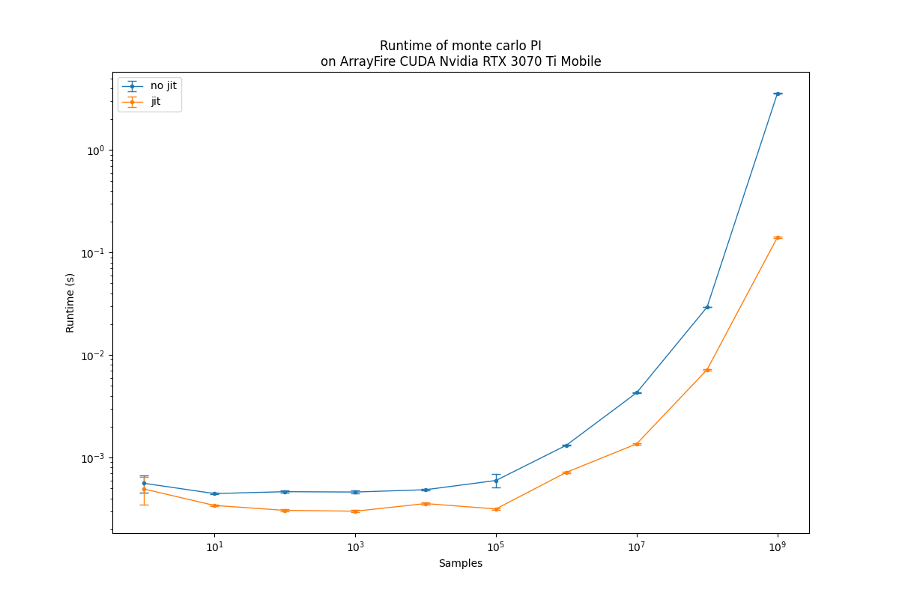

ArrayFire JIT Code Generation
The ArrayFire library offers JIT (Just In Time) compiling for elementwise arithmetic operations. This includes trigonometric functions, comparisons, and element-wise operations.
At runtime, ArrayFire aggregates these function calls using an Abstract Syntax Tree (AST) data structure such that whenever a JIT-supported function is called, it is added into the AST for a given variable instance. The AST of the variable is computed if one of the following conditions is met:
an explication evaluation is required by the programmer using the eval function, or
the variable is required to compute a different variable that is not JIT-supported.
When the above occurs, and the variable needs to be evaluated, the functions and variables in the AST data structure are used to create a single kernel. This is done by creating a customized kernel on-the-fly that is made up of all the functions in the AST. The customized function is then executed.
This JIT compilation technique has multiple benefits:
A reduced number of kernel calls – a kernel call can be a significant overhead for small data sets.
Better cache performance – there are many instances in which the memory required by a single element in the array can be reused multiple times, or the temporary value of a computation can be stored in the cache and reused by future computations.
Temporary memory allocation and write-back can be reduced – when multiple expressions are evaluated and stored into temporary arrays, these arrays need to be allocated and the results written back to main memory.
Avoid computing elements that are not used – there are cases in which the AST is created for a variable; however, the expression is not used later in the computation. Thus, its evaluation can be avoided.
Better performance – all the above can help reduce the total execution time.
# As JIT is automatically enabled in ArrayFire, this version of the function
# forces each expression to be evaluated. If the eval() function calls are
# removed, then the execution of this code would be equivalent to the
# following function.
import time
import arrayfire as af
samples = int(9e8)
x = af.randu((samples))
y = af.randu((samples))
def pi_no_jit(x, y, samples):
temp = x * x
af.eval(temp)
temp += y * y
af.eval(temp)
temp = af.sqrt(temp)
af.eval(temp)
temp = temp < 1
af.eval(temp)
return 4.0 * af.sum(temp) / samples
def pi_jit(x, y, samples):
temp = af.sqrt(x * x + y * y) < 1
af.eval(temp)
return 4.0 * af.sum(temp) / samples
# Print device info
af.info()
# Time JIT code
start = time.perf_counter()
res = pi_jit(x, y, samples)
af.sync()
end = time.perf_counter()
print("jit:", end - start, res)
af.device_gc()
# Time no JIT code
start = time.perf_counter()
res = pi_no_jit(x, y, samples)
af.sync()
end = time.perf_counter()
print("no jit:", end - start, res)
The above code computes the value of π using a Monte-Carlo simulation where points are randomly generated within the unit square. Each point is tested to see if it is within the unit circle. The ratio of points within the circle and square approximate the value π. The accuracy of π improves as the number of samples is increased, which motivates using additional samples.
There are two implementations above:
an implementation that does not benefit from the JIT (pi_no_jit), and
an implementation that takes advantage of the JIT feature (pi_jit).
Specifically, as JIT is an integral feature of the ArrayFire library, it cannot simply be turned on and off. The only way for a programmer to sidestep the JIT operations is to manually force the evaluation of expressions. This is done in the non-JIT-supported implementation.
Timing these two implementations results in the following performance benchmark:
The above figure depicts the execution time as a function of the number of samples for the two implementations discussed above.
When the number of samples is small (less than 100k samples), the execution time of pi_no_jit is dominated by the launch of multiple kernels and the execution time pi_jit is dominated by on-the-fly compilation of the JIT code required to launch a single kernel. Even with this JIT compilation time, pi_jit outperforms pi_no_jit by 1.4-2.0X for smaller sample sizes.
When the number of samples is large (more than 1 million samples), both the kernel launch overhead and the JIT code creation are no longer the limiting factors – the kernel’s computational load dominates the execution time. Here, the pi_jit outperforms pi_no_jit by 3-25X.
The number of applications that benefit from the JIT code generation is significant. The actual performance benefits are also application-dependent.